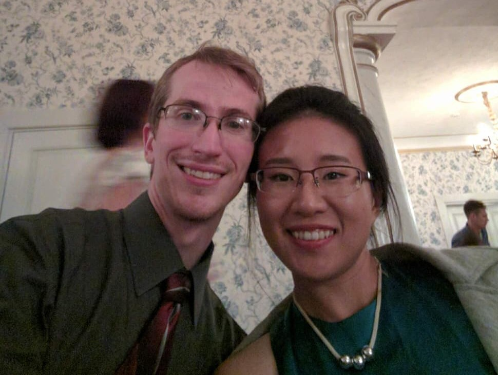

Our story

Our story began at the University of Michigan in 2008. We both wanted to pursue a career in science, and get our doctorates, so we both set out to work in laboratories as soon as possible by joining the Michigan Research Community. A perk of this group was getting to live in a recently modernized dorm, the Mosher-Jordan building. While we did meet there, the more important part of our story was our mutual friendships with Alena Wu and Harrison Kim, and further shared relationships with other friends that kept bringing us into proximity. In October of 2010, those friends dragged us into a triple date, because they saw what we did not, which was our compatibility.
Since that dinner on October 30, 2010, we've been together, coming to know one another more and more. Our mutual desire to return to the well of knowledge some small portion of what we drank from it has pushed our careers, and that led us both to the East Coast to attend graduate schools only a short drive from one another, Johns Hopkins/National Institutes of Health and the University of Delaware. We both later chose to continue work in research as postdocs, staying first at Hopkins before looking further afield to the Midwest. Apart from our shared desire for professional development, our shared interests has given us tens of thousands of hours that were more enjoyable together than if we did them alone. We've laughed, played, toiled, and struggled together for so long it's sometimes difficult to recall the feeling of our lives before we were together.
In all the personal ways that matter, for all intents and purposes, we are married already, so much so that a discussion of if we should get married came as almost an afterthought in the kitchen as we made dinner together in 2019. After the Pandemic, there wasn't any hurry–after all, when you love someone without preconception, doubt, or apprehension, there hardly seems any reason to validate this relationship once more. We stay together because it is what we both want. But that isn't what this ceremony is about; instead, this is a chance to celebrate our love and continued connection together with so many of the people in our lives who mean so much to us. As much as this is our story, what we cherish most is how it intersects with the stories of everyone reading this, and we can't wait to share in each others stories for years to come.